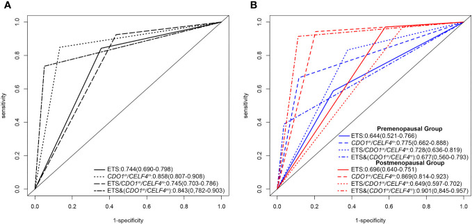

1Background & Objective
- Problem: TVS high sensitivity but low specificity (24.3–74.0%); biopsy invasive & painful.
- Objective: CDO1/CELF4 methylation as triage biomarker for EC & atypical hyperplasia (AH).
2Study Design & Cohort
293
BE (48.3%)
261
EH (49.2%)
14+39
AH 2.3% + EC 6.0%
- Setting: Cangzhou Central Hospital; Oct 2022 – Apr 2023; biopsy indications.
- Assays: cervical exfoliated cells → CDO1m/CELF4m (ΔCt ≤8.4/≤8.8) + TVS ET + markers.
- Reference: endometrial histopathology = gold standard.
- Outcome: endometrial malignant lesions = AH + EC.
6.92
OR · methylation (1.10–43.44)
5.03
OR · ET (1.83–13.82)
48
BE · y
45
EH · y
48.5
AH · y
56
EC · y
ΔCtJ
EH→AH P<0.05
ΔCtP
EH→AH P<0.05
ΔCtJ
AH→EC P<0.05
- Dual-gene logic: either gene positive → triage positive (higher sensitivity).
- AH detection: precancer positivity 71.4% — early intervention window.
- Inclusion: biopsy indication (AUB / PMB / TVS abnormal); consent.
- Exclusion: prior treatment · other malignancy · invalid samples.
- Sample: cervical exfoliated cells before biopsy → dual-gene methylation.
- Statistics: multivariate logistic (OR) · ROC/AUC · menopause-stratified.
94.9%
Sp · ET+DNA
0.90
AUC · post + TVS
0.78
AUC · pre
Median age 47 y (BE 48 · EH 45 · AH 48.5 · EC 56); age differs across groups (P<0.05); methylation AUC pre vs post ns (P=0.1453).
3Methylation Positivity by Pathology
- Clear gradient: benign ~13% vs AH 71.4% / EC 89.7% (P<0.05).
4ROC — Menopause Stratification

Fig. ROC — overall AUC 0.86; postmenopausal 0.87 → +TVS 0.90.
0.86
overall
0.87
postmenopausal
0.90
post + TVS
0.78
premenopausal
- Post menopausal: TVS addition lifts AUC 0.87 → 0.90.
- Pre menopausal: TVS adds no benefit (0.78 vs 0.73).
5Triage Performance & TVS Combination
84.9%
Se · dual
86.6%
Sp · dual
94.9%
Sp · ET+DNA
- ET + methylation: specificity rises to 94.9% — fewer false triage referrals.
- Non-invasive: cervical cytology outperforms other clinical indicators for AH/EC.
- Early window: AH (precancer) detected at 71.4% positivity — intervention before cancer.